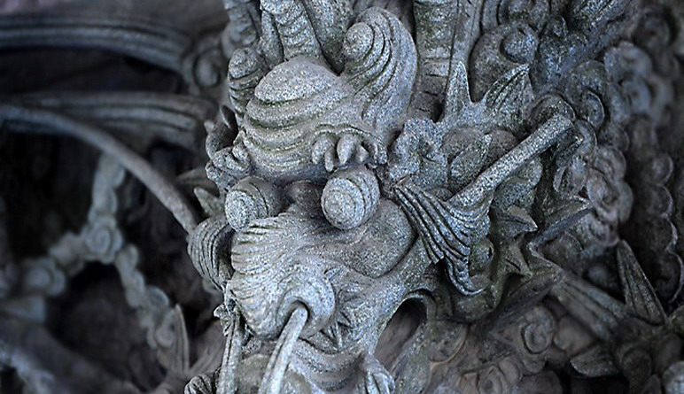
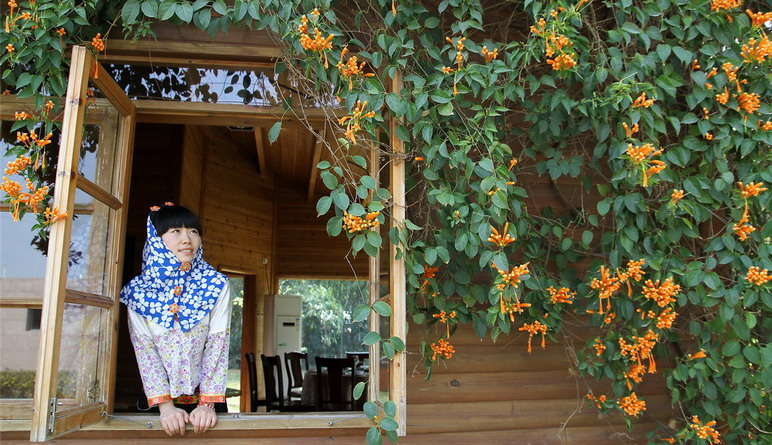

惠和石文化园位于厦门岛内湖里区吕岭路上忠仑公园东北园区，整个园区由中华石文化历史长廊、名人艺术长廊、中国瑞兽展览、珍贵石雕文物珍藏集、人性石雕艺术馆、影雕技艺展示体验区、惠安女风情表演区、奇石雅石馆、非遗馆等看点共同构成了一个丰富有特色的精致行程。在2013年，除了丰富特色的看点之外，惠和石文化园还将隆重推出精彩纷呈的互动体验项目，包括：最奇妙的涂鸦艺术--石头彩绘；最奇趣的手工制作--软陶DIY；最欢乐的童趣体验--石磨磨豆浆；体验最古老的宫廷乐器，精美的石头会唱歌--石琴弹唱；体验身边的非遗文化--影雕制作；
惠和石文化园整个园内行程约1.5小时，全程由专业的讲解员进行讲解介绍，行程轻松休闲，老少皆宜，是外地游客欣赏福建文化，了解闽南风俗人情的绝佳好去处。现在通过系列互动体验项目的推出，不仅丰富了行程，增加了时间，又把石文化进行了延展，让游客朋友通过亲身感受更深刻的理解石文化的魅力和生活应用，成为本地周末家庭亲子活动、情侣浪漫出行、学生科普学习的极佳场所。
交通信息
公共交通：
34路 厦36线 厦38线 39路 45路 46路 厦55线 厦57线 88路 96路 108路 202路 518路 525路 526路 805路等坐到忠仑站，再往东（brT蔡唐站）方向走两百米即可。
 330445074@qq.com
330445074@qq.com 12345
12345